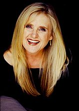
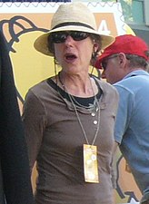
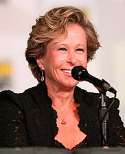

The Simpsons (bra/prt: Os Simpsons) é uma série de animação e sitcom norte-americana criada por Matt Groening para a Fox Broadcasting Company.
A série é uma paródia satírica do estilo de vida da classe média dos Estados Unidos (como cultura, sociedade e televisão) e aspectos da condição humana, através da família protagonista, que consiste de Homer Jay Simpson, Marjorie (Marge) Bouvier Simpson, Bartholomew (Bart) Simpson, Elisabeth (Lisa) Marie Simpson e Margareth (Maggie) Simpson, cuja vida se passa na fictícia cidade de Springfield.
A primeira equipe de roteiristas foi montada por Sam Simon e era composta por John Swartzwelder, Jon Vitti, George Meyer, Jeff Martin, Al Jean, Mike Reiss, Jay Kogen e Wallace Wolodarsky.
Lista de produtores ao longo da série
ver também: Elenco de Os Simpson Elenco de Os Simpsons
The Simpsons possui seis membros do elenco principal: Dan Castellaneta, Julie Kavner, Nancy Cartwright, Yeardley Smith, Hank Azaria e Harry Shearer.
|  |  |  | |
| Dan Castellaneta | Julie Kavner | Nancy Cartwright | Yeardley Smith |
| Homer, Vovô Simpson, Barney, Krusty entre outros | Marge, Patty Bouvier e Selma Bouvier | Bart, Nelson, Ralph, Todd Flanders, entre outros. | Lisa |
A série é focada nas aventuras de uma típica família suburbana do meio-oeste estadunidense. O pai, Homer Simpson, é inspetor de segurança da Usina Nuclear de Springfield. Marge Simpson, sua esposa, é uma dona de casa estereotipada. O casal tem três filhos: Bart, um garoto rebelde de dez anos; Lisa, uma menina-prodígio de oito anos que adora tocar saxofone e Maggie, a caçula da família, uma bebê que não fala